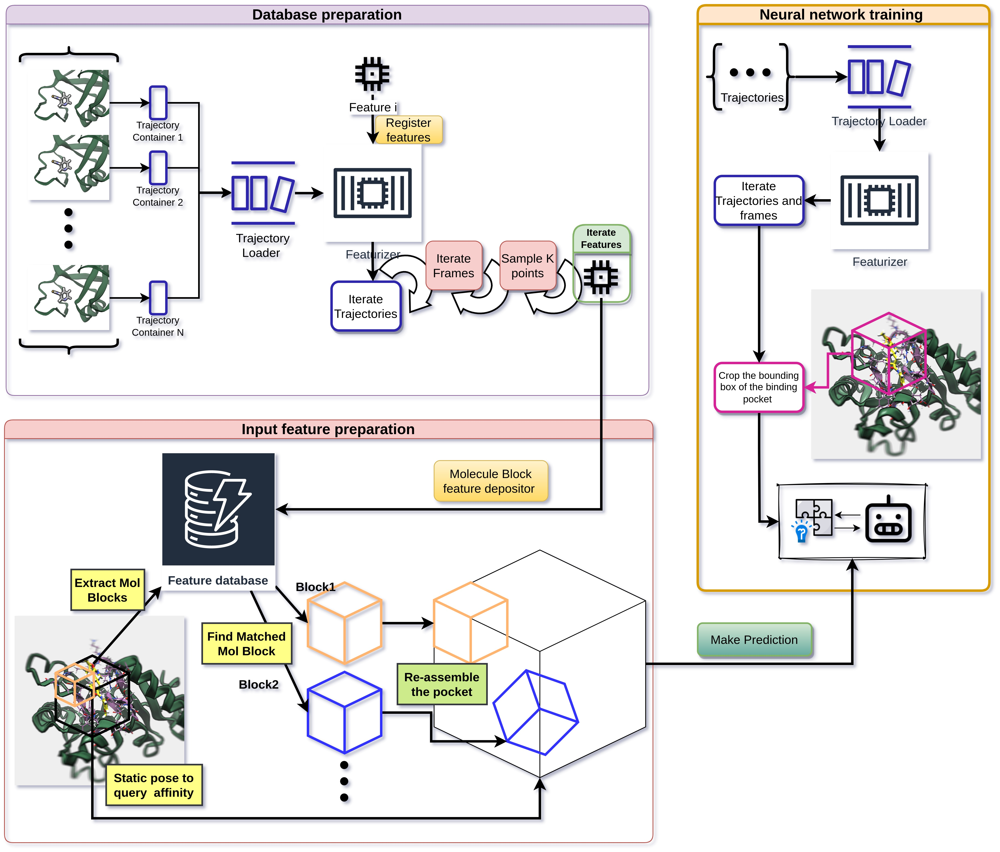
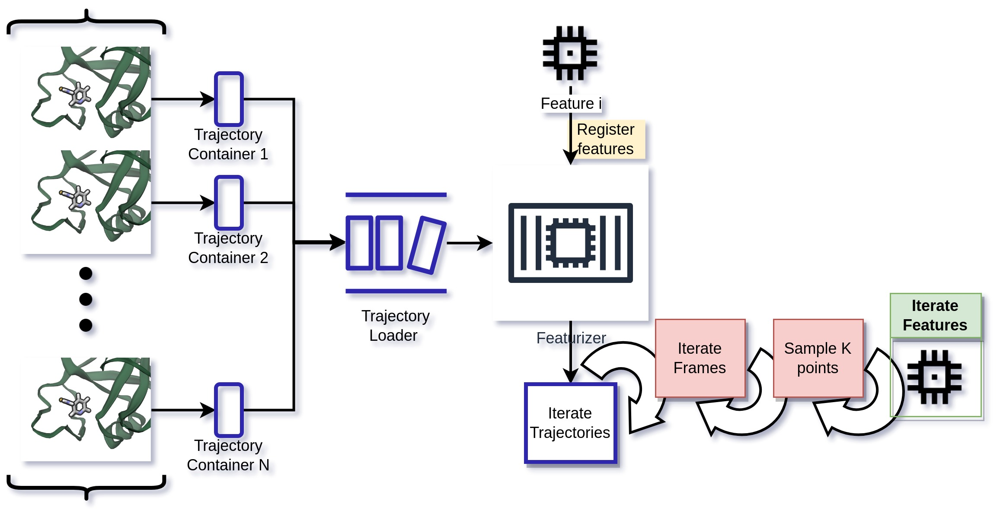
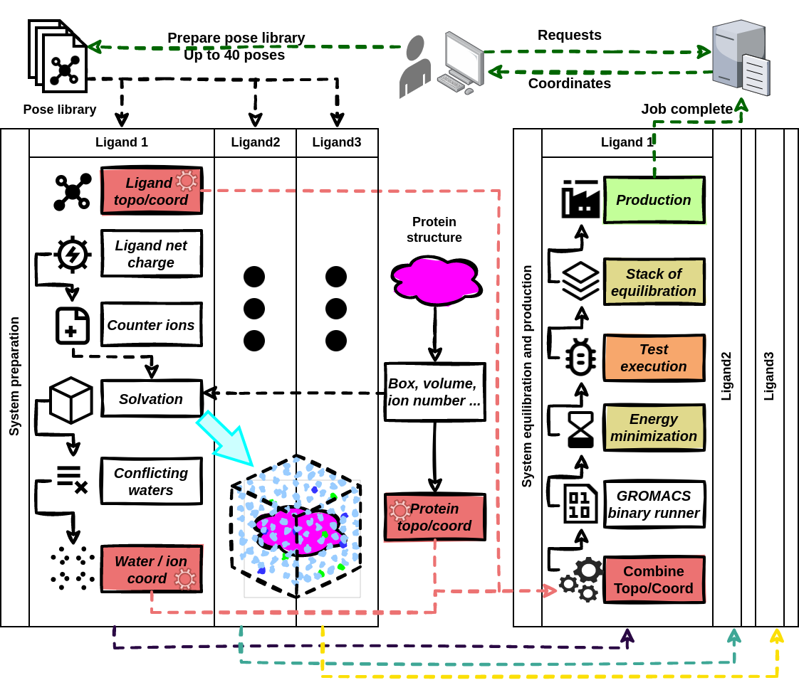

I focus on integration of molecular dynamics simulation techniques with machine learning for drug discovery.
My work builds the computational machinery that makes data reusable;
develops algorithms to extract dynamic features;
and develops drug discovery platforms for computer-aided drug design.
MD data is highly fragmented. Trajectory, topology, energy, MD parameters and force field are
loosely coupled with each other. Scientists often have to dive into the messy directory tree, scripts,
and lab notebooks to recall the simulation file and protocols.
I lead the development and integration of
"Biophysics" metadata schema into the H5MD format
and provenance module in GROMACS, so that the trajectory files become self-consistent upon generation,
and could trace back to the simulation setup and parameters even years later.
FAIR simulation dataSimulation metadata should outlive the trajectories!MDDB · MOLSIM · JCIM 2025
A format only helps if the rest of the field reads it. I work with the
MDDB consortium and with developers of other MD software —
NAMD, VMD, ViaMD — on standards that hold across tools rather than inside one of them.
Alongside that, co-development of the
MOLSIM ontology gives the domain a
shared vocabulary, and earlier work set out a FAIR-compliant way to manage simulation
trajectories
(J. Chem. Inf. Model. 2025).
Dynamic feature extractionTo move, or not to move, that is the question!Nearl · Bioinformatics 2025
Structure-based affinity prediction usually starts from one static pose, which throws away
exactly what the simulation was run to capture. Nearl
instead turns an ensemble of trajectories into voxel-based descriptors of the binding pocket.
The pocket is decomposed into smaller “molecule blocks”, each featurised on its own, so a
feature computed from one trajectory can be reused when the same local configuration turns
up in a different structure
(Bioinformatics 2025).
See it in 3D ↓

Information flow of trajectory features and the sub-systems that produce them.

Automated pipeline for trajectory decomposition into reusable molecule blocks.
Drug discovery platformBrowser Is All You Need!ACGui
Running a screening campaign normally means stitching together system preparation, a
scheduler, storage and half a dozen analysis scripts.
ACGui closes that loop in one browser-based
platform: set the system up, dispatch it to HPC, keep the trajectories, then play them back
and analyse them in place.
The automated system-preparation workflow reaches a success rate above 80%, which is what
makes running simulations in batch realistic rather than a per-system chore.

Batch MD simulation set up and dispatched through ACGui.
Flexible 3D pose recognitionTopology helped you a lot!FEater · Patterns 2025
Standard 3D recognition benchmarks separate their classes by basic shape — a chair does not
look like a lamp. Molecular fragments do not work that way: every member of a class shares
one fixed covalent topology, neighbouring classes can differ by a single atom, and the only
variation inside a class is conformation. A model that scores well here has to abstract
shape rather than memorise it.
FEater turns that into a labelled
classification task. Two datasets are extracted from PDBBind: FEater-Single
(20 classes, one per standard amino acid, ~8.8 M fragments) and FEater-Dual
(400 classes, every two-residue combination, ~8.7 M stretches). Each fragment comes in four
representations of the same geometry — atomic coordinates, molecular surface vertices,
323 voxels, and 2D Hilbert-curve images — and the train/test split is blocked by
conformational clustering, so the test set is not a set of near-duplicates of the training set.
Across PointNet, PointNet++, DGCNN, PAConv, VoxNet, ResNet, ConvNeXt, Swin Transformer and
ViT, the representation decided the outcome more than the architecture did. On the 400-class
task at equal sample size, a ResNet reading Hilbert-curve embeddings of voxel data reached
97.1% accuracy while PointNet on raw coordinates reached 34.0% — and the far larger
transformer models did not beat that small ResNet. Models trained only on static
experimental structures then held comparable accuracy on conformations sampled from MD
trajectories, which is what makes augmenting a data-sparse discovery workflow with simulated
ensembles worth the effort
(Patterns 2025).
Dynamic features become an additional channel for 3D geometric deep learning.
A binding pocket, decomposed
One pocket, cut into its molecule blocks. Drag to rotate, hold Ctrl (⌘ on macOS) and scroll
to zoom.
Loading structure…
Example pocket8 molecule blocksDrag ↔ rotateCtrl + scroll ↕ zoom
protein ligand & pocket residues bounding box molecule blocks